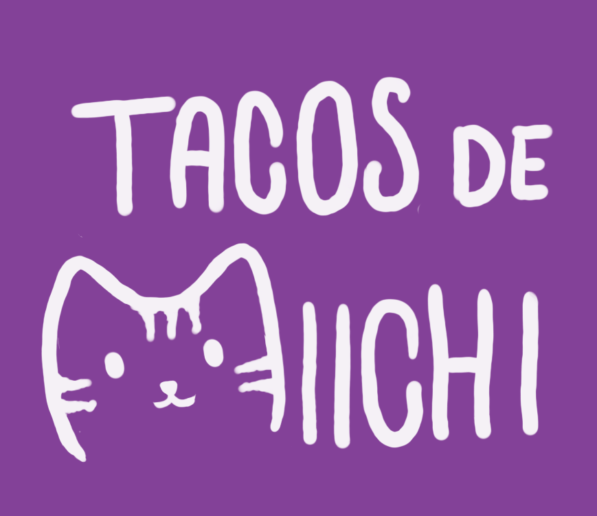

Tacos de michi
Tacos de michi es mi nombre de diseñadora gráfica, El nombre es "Tacos de Michi", este surge de un persona- je de anime que me gusta, él se llama Takemichi y a partir de la mala pronuncia- ción de este sale el nombre de Tacos de michi, el nombre me agrado bastante asi que lo adopte como mi user de Instagram y por ello varios de mis amigos me empezaron a decir "tacos de michi" y lo termine adoptando como mi nombre.
Diseñadora gráfica y artista multidisciplinar de Puebla, México; me inspiro de diferentes artistas que he conocido, me gusta trabajar con técnicas análogas como pintura además de la ilustración digital, sigo en busca de un estilo propio y me gusta retratar cosas que me pasan en la vida cotidiana. Soy una persona bastante sociable y esto hace que transmita fácilmente confianza, además de ser energética y responsable, me entusiasma aprender cosas nuevas y enfrentarme a retos. Me gusta esforzarme al máximo en cada una de las cosas que hago.
Redes sociales
Dentro de las redes sociales que tengo, está mi Instagram en el cual puedes ver alguna de las ilustraciones que he realizado, los eventos donde he participado e información donde me pueden contactar para saber más acerca de mi trabajo
También tengo una cuenta de Tik tok, en esté, tengo videos donde explico ciertos temas relacionados con el diseño, muestro algunos de mis trabajos que he realizado a lo largo de mi carrera, además de colocar videos donde se puede ver el proceso creativo que conllevan cierto tipo de obras que realizo.
Y por último, cuento con Behanceque es una plataforma en línea donde creativos de todo el mundo pueden exhibir y descubrir portafolios de diseño y proyectos artísticos. Es utilizada por diseñadores gráficos, ilustradores, fotógrafos, y otros profesionales creativos para compartir su trabajo, conectar con clientes potenciales, y encontrar inspiración a través de la comunidad global de Behance.Además, permite a los usuarios interactuar, recibir comentarios y explorar las tendencias más recientes en diversas disciplinas visuales.
Portafolio
Un portafolio es una colección visual de sus mejores trabajos, donde muestra sus habilidades, estilo y experiencia en proyectos de diseño. Sirve como una herramienta clave para demostrar su capacidad creativa y técnica ante potenciales clientes o empleadores, proporcionando ejemplos de proyectos reales que reflejan su versatilidad y enfoque profesional.